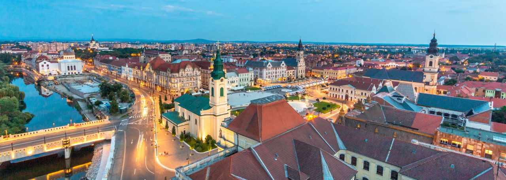

Atractiile Orasului Oradea
Centrul Orasului Oradea
Cele mai importante schimbări ale modului în care arată în prezent #PiațaUnirii au avut loc în perioada trecerii dintre secole, odată cu dezvoltarea economică. Chiar dacă, de-a lungul timpului, în perimetrul acesteia s-a desfășurat o varietate mare de activități și numele i s-a schimbat de multe ori: Piaţa Mică, Piața Sfântul Ladislau, Piaţa Ferdinand, Piaţa Malinovski sau Piaţa Victoriei, în prezent, Piaţa Unirii - reprezintă centrul cultural-istoric și de promenadă al orașului în care trebuie să ajungi neapărat atunci când ne vizitezi!
Aquapark Nymphaea